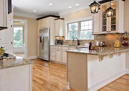
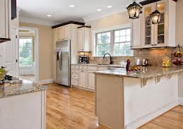
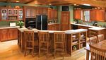

 


Custom Made. Made Affordable.
Transitions Custom Kitchens brings new definition to the term “custom kitchens”. Our staff of talented designers, builders, finishers and installers put a personal touch on every facet of your project. From the first design consultation to the final clean -up of the installation, each project receives a quality touch that can only be described by one that has experienced it. Over the years, we have been creating a truly “custom” and affordable product that has allowed our business to thrive solely on word of mouth advertising. The beauty of our work along with our exceptional customer service leaves each customer thankful for their choice in cabinetry builder.
{kind=link}
 Our wide range of styles, finishes, colors, woods, laminates, molding, and hardware make the design process as unique to your own personality and taste as possible. With true custom design and building, your choices are virtually limitless.
Our wide range of styles, finishes, colors, woods, laminates, molding, and hardware make the design process as unique to your own personality and taste as possible. With true custom design and building, your choices are virtually limitless.
Whether you are looking for more storage, more counter space, more seating, more functionality, or just a better look, our timeless craftsmanship will reflect your unique vision of a “one of a kind, dream kitchen”
Quality, Style and Value
- Lasting Performance and Beauty
- The highest standard of materials, finishing products, accessories, and hardware
- Production schedule capable of fitting almost any construction timeline
- All the current and traditional styles you are looking for, and much more
- Virtually no wasted space giving you the value you deserve
- Satisfaction guaranteed with a “One Year Walk Through” inspection and a “10 Year Limited Warranty”
Construction
- Handpicked premium solid hardwoods like Maple, Cherry, Oak, Birch, Alder, Mahogany, and Hickory
- Furniture grade plywood used for the cabinet construction
- Handcrafted solid hardwood or plywood dovetail drawer boxes
- A wide range of carved corbels, pilaster columns, turned post, and carved overlays
- Fully concealed adjustable hinges that allow for precise door alignment
- Adjustable shelving options for any cabinet
- Soft closing, full extension drawer slide options for “no slam” drawers
- An unlimited list of interior cabinet accessories
Finishes
- Sixteen customary stain and paint color options
- Custom matching to any stain or paint color desired
- Hand rubbed stains with glazes and texturing options
- Deep penetrating spray stains for rich depth in the finished color
- Get creative by color swapping or mix matching to add to your personal taste
- Dozens of weathered, distressed, glazed, and textured finishes
- Superior cabinet finishes with several sealer and top coat sheens to chose from
- Hand sprayed and control dried for a truly durable and lasting finish